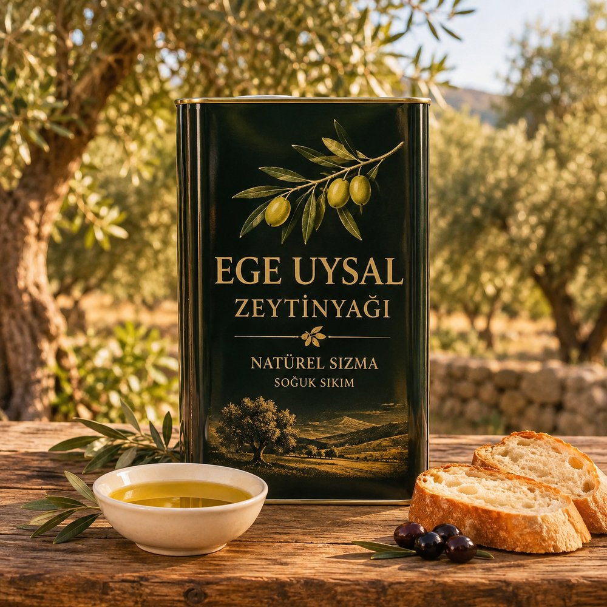
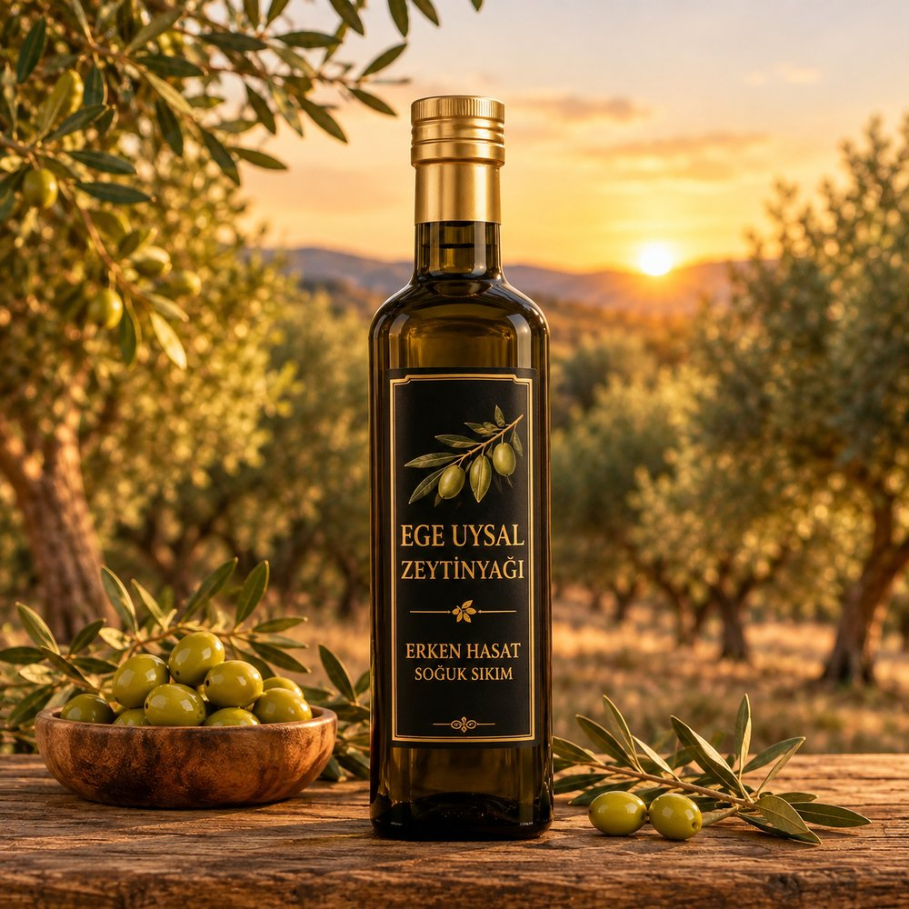
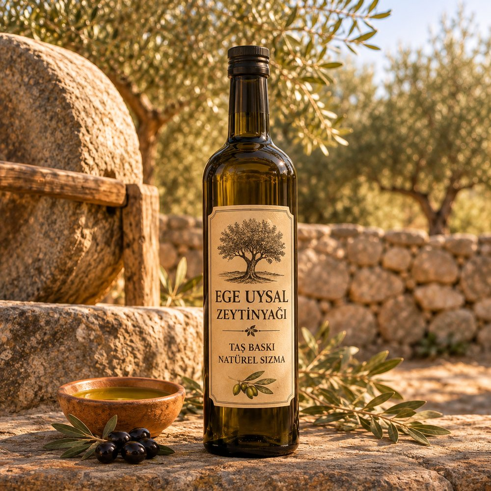
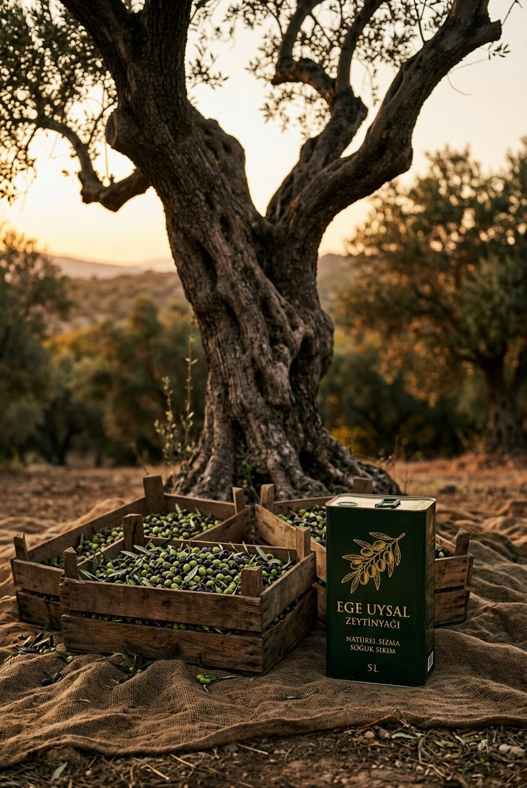

Günlük kullanım
Natürel Sızma
Her güne, her sofraya.
- Lezzet: Dengeli, meyvemsi
- Kullanım: Kahvaltı, salata, sıcak yemekler
- Sıkım: Soğuk sıkım, katkısız
Soğuk sıkım · Kendi mahsulümüz
Ege'nin bereketli topraklarından, katkısız ve doğal zeytinyağı. Natürel Sızma, Erken Hasat ve Taş Baskı.
Her biri farklı bir hasat ve sıkım anlayışından gelir. Sofranıza, damak zevkinize hangisi uyuyorsa.

Günlük kullanım
Her güne, her sofraya.

Hasadın ilk günleri
Yeşil zeytinin keskin ilk hali.

Geleneksel yöntem
Eski usul, sabırla.
Bizim hikayemiz
Zeytin acele sevmez. Ağaç yıllarca bekler, biz de onu bekleriz. Şişedeki her damla, Ege toprağının sabrıdır.

Bir damla zeytinyağının sofranıza gelene kadar geçtiği yol. Aşağı kaydırdıkça çizgi dolar, yolculuk ilerler.
Zeytinler doğru olgunluğa ulaştığında, dala zarar vermeden toplanır. Erken Hasat için zeytin henüz yeşilken dalından alınır.
Toplanan zeytin yaprak ve daldan ayrılır, temiz suyla yıkanır. Sıkıma sadece zeytin girer.
Zeytin ezilip hamur haline getirilir, yağ hamurdan ayrılır. Taş Baskı'da bu iş geleneksel taş değirmenlerle, yavaşça yapılır.
Yeni sıkılan yağ dinlendirilir, tortusundan ayrılır ve süzülür. Berrak, temiz bir tat için sabır gerekir.
Zeytinyağı ışıktan ve havadan korunarak şişelenir, sipariş üzerine sofranıza yola çıkar.
Ürünü seçin, WhatsApp'tan yazın. Fiyat, hacim seçenekleri ve gönderim bilgisini size hemen iletelim.
Sofralık zeytin (siyah yağlı duble, yeşil limonlu çizik), zeytinyağı sabunu ve kuru incir için de bize yazabilirsiniz.